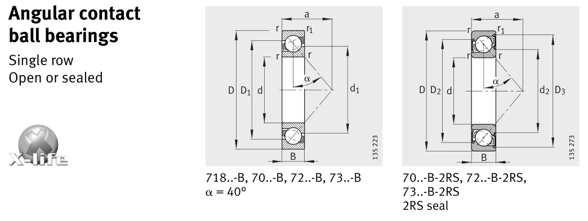

Original catalogue drawing - FAG Schaeffler HR 1, page 242

Scanned from the manufacturer catalogue page listing this part number. All part numbers printed on that table share the same drawing.
Scale cross-section
Blue = inner / outer ring, yellow = rolling element. Drawn to scale from this part's own
dimensions for selection reference only - not a manufacturing or assembly drawing.
Dimension table (mm / inch)
Symbol
Dimension
mm
inch
d
Bore diameter
35
1.378
D
Outside diameter
80
3.1496
B
Inner-ring / bearing width
21
0.8268
r
Chamfer (min)
1.5
0.0591
Notes
Weights are given in kg. Load ratings are shown in both the original catalogue units and the converted value (1 N = 0.2248 lbf). Data is provided for selection reference only - confirm against the latest official catalogue before ordering.
Main dimensions
Bore d (mm)
35
Outside dia. D (mm)
80
Width B (mm)
21
Seal outside dia. D2 (mm)
64.7
Dimension D3 (mm)
73.5
Load ratings & speeds
Basic dynamic load rating Cr (lbs)
8992
Basic static load rating Cor (lbs)
6182
Basic dynamic load rating Cr (N)
40000
Basic static load rating C0r (N)
27500
Fatigue limit load Cur (N)
1860
Limiting speed nG (rpm)
5,000
Effective load centre a (mm)
35
Weight
Weight (kg)
0.447
Mounting dimensions (fillets / shoulders)
Housing fillet r max (mm)
1.5
Chamfer r1 min (mm)
1
Shaft shoulder da (mm)
44
Housing shoulder Da (mm)
71
Housing shoulder Db (mm)
74.4
Housing fillet ra max (mm)
1.5
Housing fillet ra1 max (mm)
1
Bearing life (ISO 281 basic rating life)
C / P
Equivalent load P (N)
L10 (106 rev)
L10h at 1,600 rpm
4
10,000
64
667
6
6,667
216
2,250
8
5,000
512
5,333
10
4,000
1,000
10,417
15
2,667
3,375
35,156
Basic rating life per ISO 281: L10 = (C/P)3 with C = 40,000 N. Hours = L10 x 106 / (60n). Life-modification factors for lubrication, contamination and temperature (aISO) are not included.
Source & traceability
Brand
FAG
Source catalogue
FAG / Schaeffler Rolling Bearings HR 1
Catalogue page
p.242 (dimensions)
Load ratings in newtons, fatigue limit load Cur, limiting speed nG and reference speed nB.
Send us the quantity you need and we will come back with price and
lead time, normally within 24 hours. Equivalent parts from other brands can be quoted at the same time.